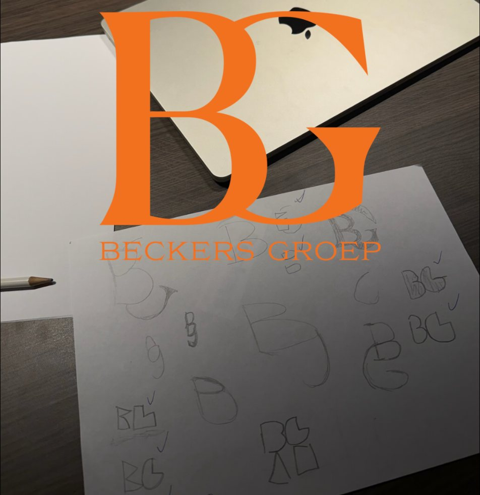
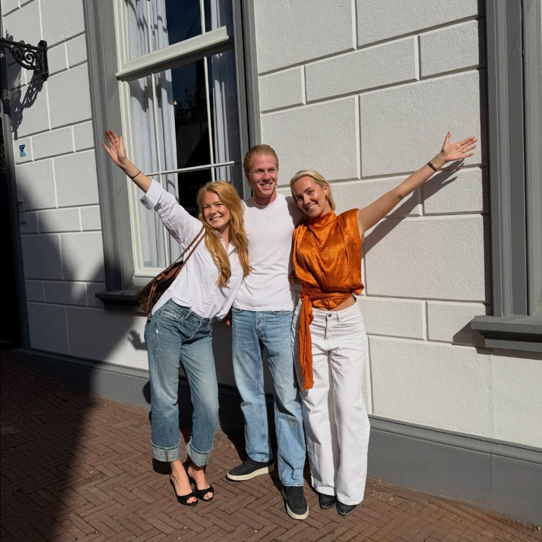
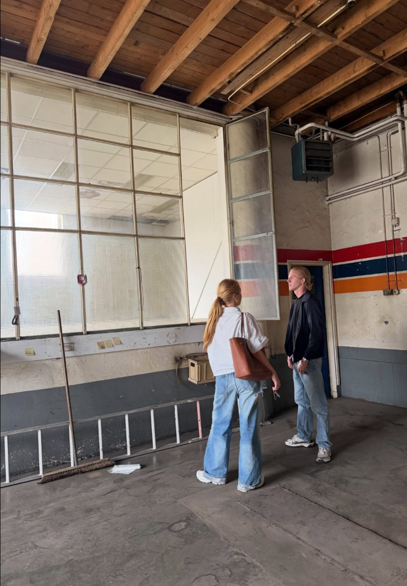

Kopen
Op zoek naar het volgende object. Voor project 2 zijn al zes objecten bekeken.
Beckers Groep koopt vastgoed, verbouwt het zelf en verkoopt het weer. Drie broers en zussen met elk hun eigen vak: makelaar, vastgoedbeheerder en timmerman.


Beckers Groep B.V. is een bedrijf van Louke, Steppe en Ties. Wat ze verbindt: de liefde voor vastgoed en de wil om er samen iets moois van te maken.
Beckers Groep koopt panden, verbouwt ze en verkoopt ze daarna weer. Dat doen ze met de kennis die ze als team in huis hebben.
Op zoek naar het volgende object. Voor project 2 zijn al zes objecten bekeken.
Eerst slopen, dan opbouwen. De verbouwing volgen jullie van dichtbij via Instagram.
Met een makelaar in het team weet Beckers Groep waar het in de verkoop om draait.
Het eerste project van Beckers Groep. Het pand werd gekocht twee dagen nadat de papieren getekend waren.

Het volgende pand is nog niet gevonden. Zes objecten zijn inmiddels bekeken, en de zoektocht gaat door.
Elke zondagavond staat er een vaste meeting in de agenda van Beckers Groep.
Van sloop tot oplevering: Beckers Groep laat alles zien op Instagram. Stuur gerust een bericht als je een pand hebt, mee wilt denken of gewoon wilt kennismaken.